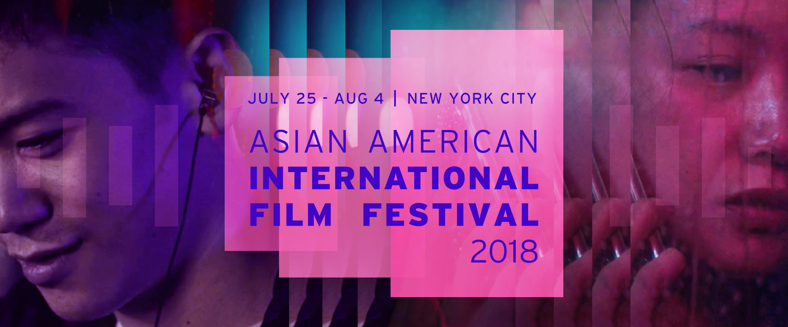
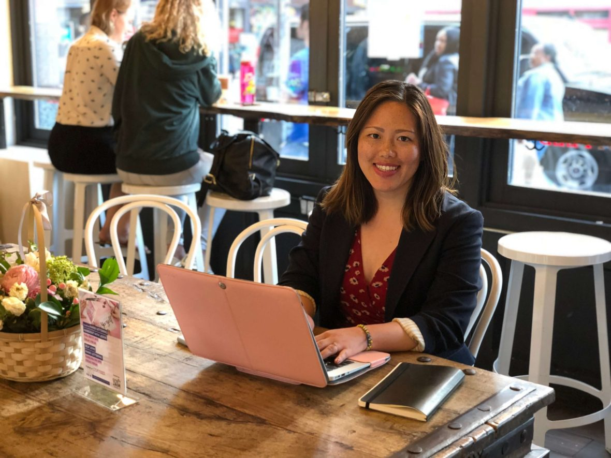

News and Events
PbP-NY x AAIFF 2018
July 17, 2018

PbP-NY x 41st Asian American International Film Festival (AAIFF)
PbP-NY is proud to be a community partner for this year’s Asian American International Film Festival held annually by our past partner, Asian Cinevision. The festival will run from July 25 – August 4 and showcases the best in independent Asian and Asian American cinema. To learn more about the festival and this year’s lineup, go HERE.
Can’t decide what film(s) to watch, check out some of the selections below:
INVISIBLE HANDS (Dir. Shraysi Tandon | Indonesia, Ghana, China, India, USA | Documentary | 80 mins | English | New York Premiere | Q&A to follow with filmmakers)
July 27, 2018, 8:00pm – Village East Cinema
Shot in 6 countries including the U.S, India, Indonesia, Ghana, Hong Kong and China. INVISIBLE HANDS is a harrowing account of children as young as 6 years old making the products we buy and consume everyday. A modern day slavery system quietly supported by some of the world’s biggest corporate giants. The film also shows chilling undercover footage of children being sold like animals by a child trafficker. The film marks the directorial debut of journalist Shraysi Tandon and is produced by Academy award winning filmmaker Charles Ferguson.
8 MINUTES AHEAD (Dir. Ben Hoskyn | Canada, Hong Kong | Drama | 72 mins | Chinese (Cantonese), English with English subtitles, US Premiere)
August 1, 2018, 6:00pm – Village East Cinema
Workaholic, success-obsessed Zhou Li spent decades building a shipping company from the ground up—and now, at the end of his life, he wonders whether it all really amounted to anything. When he makes a sudden change to his will and to the inheritance his children stand to receive, his two sons are faced with an age-old dilemma: how much wealth is enough, and how far are you willing to go to get it? Each must decide between devoting his life to the family business or breaking away from it in order to live a life his father never could. Eldest son Danny is fully consumed running the business his father started. He takes the recent adjustments to the will as a personal affront and refuses to accept any change to his standing, making him even more oblivious to the needs and troubles of his own family. Nineteen-year-old Cheng is the son Zhou never met. Cheng has been obsessed with getting rich ever since he understood what money was. Now that an opportunity has presented itself, Cheng soon realizes that money comes with strings attached and he’ll be lucky if he can make it out alive.
8 MINUTES AHEAD is a directorial debut that incorporates the very best of Hong Kong filmmaking: exciting action, romance, and vibrant color.
FROM THREE FEET TALL SHORTS PROGRAM (117 mins)
August 2, 2018, 6:00pm – Village East Cinema
Do you remember what it was like to be a child? These films ask us to see through the perspective of children facing very adult situations, and who yet react with a strength and heart that many grown-ups still aspire to have.
ART BEYOND THE SCREEN SHORTS PROGRAM (95 mins)
August 2, 2018, 8:30pm – Village East Cinema
Going beyond the cinematic talents of our community, the following shorts showcase and dive into other art forms. How Asian talents from around the world transform and use art to expand what it means to be an artist.
For being a PbP-NY supporter, you can get 25% off using code: PBP_41
Just choose the film(s) and enter the code at checkout.
Let’s support Asian American films and filmmakers and fill up those seats! See you there!
Defying Stereotypes: Interview with Lin Chen, CEO & Founder of Pink Moon Co.
June 17, 2018
By Sarah Tung
At Project by Project New York (PbP-NY), we’re always excited to hear inspiring stories from the Asian American community. Stories about work-life harmony, overcoming the odds, and pursuing unconventional career paths – while remembering to give back. Generosity is at the heart of it all.
How can we elevate Asian American narratives to include broader definitions of success? How can we encourage the younger generation to pay it forward?
We sat down with PINK MOON CO. founder Lin Chen to chat about how she got into the natural beauty industry, how her multicultural background has influenced her business and personal growth, and her thoughts on this year’s PbP theme, immigration. She also shares her career goals and her recommended reading list.
Lin Chen is carving out her own path in the natural beauty industry, one that is unique to her skillsets and identity as a Taiwanese-American woman.

ABOUT LIN CHEN // BREAKING INTO THE NATURAL BEAUTY INDUSTRY
It all started with PETA.
In middle school, one of Chen’s friends was an avid advocate for People for the Ethical Treatment of Animals (PETA) and wasted no time in sending Chen a stash of pamphlets to read. To her horror, Chen learned about animal testing in the products she consumed. She adopted a pescatarian diet, avoiding red meat and poultry for 10 years.
“I was really against wearing fur,” said Chen. “My mom would buy me rabbit fur sweaters and fur jackets and I’d be like, ‘I am not going to wear this.’”
Chen’s mom also enjoyed buying her daughter L’Oréal products. Much to Chen’s chagrin, L’Oréal conducted animal testing. She printed out a list of “approved” brands for her mom – brands that did not test on animals.
Natural beauty seemed the way to go.
According to Statistica, the market size of the natural and organic beauty industry is projected to reach $21.78 billion USD by 2024. That’s an increase of almost 150% from $11.06 billion in 2016.
In college, Chen began learning more about the chemicals in her commercial beauty products, i.e. parabens, phthalates and silicones. She discovered EWG.org, the Environmental Working Group’s comprehensive online database of harmful ingredients in cosmetics, sunscreen, pesticides in produce, and more.
Chen began applying to jobs in public relations, looking for roles in fashion, beauty and restaurants. She found a job on Craigslist for a “cruelty-free, vegan cosmetics company” that didn’t disclose its name, and applied for it. Within a week, she nabbed an intern role there. That company turned out to be 100% Pure.
In May 2017, Chen then left Bottega Organica, where she had served as the Global Marketing and Sales Director. She had been there since 2014, and leaving the company served as the impetus to founding her own company, PINK MOON CO.
What kind of clients does she seek? Women-founded companies with sustainable practices. Chen believes in holistic wellness – for the mind, body and soul.
Initially, her mom wasn’t quite on board with the idea of her daughter striking it out on her own.
“I was definitely freaking out…what am I going to tell my mom?” said Chen. “Will [my mom] think I’m a failure?”
ON IMMIGRATION AND MULTICULTURAL BACKGROUND
Chen’s parents are immigrants who moved to California from Taiwan in the 1970s. They were both on full scholarships for their Master’s degrees. Chen’s parents have always had high expectations for their children. While her brother became a doctor, Chen had something else in mind…
“Growing up, I didn’t have straight A’s,” said Chen. “I had some pretty bad grades in high school. I wasn’t very education-focused. I’m more creative.”
Chen’s mom advised her to go back to grad school, study to become a CPA, or apply to a big corporation. But Chen had been working at start-ups since 2013 and had no intention of returning to the corporate world.
“I was like, ‘I’m going to be so unhappy,’” said Chen. “I don’t want to do that. I want to be my own boss.”
Instead, she built PINK MOON CO., a “strategic branding + marketing consultancy for women-founded indie eco beauty, wellness & sustainable fashion startups,” according to Lin Chen’s LinkedIn page.
Her foray into entrepreneurship came at the tail end of a devastating breakup. Crushed, Chen began to reevaluate her self-described “co-dependent” habits.
“That’s when I woke up,” said Chen. “OK, I need to really build a life for myself that I’m happy about and proud of.”
A month after her breakup, she booked a trip to Norway. Her first solo trip.
“Traveling for sure opens up your mind and makes you more open-minded and accepting of other cultures and other people, thoughts and ideas,” said Chen.
ON CAREER GOALS AND PROFESSIONAL GROWTH
That global citizen mindset has served Chen well in her business endeavors. One of Chen’s personal convictions is to “defy” Asian stereotypes.
In the green beauty industry, “Asians are still under the radar,” says Chen. If you take Korean Beauty (or “K-Beauty”) out of the equation, there’s even less Asian representation. Currently there are no prominent Asian female founders. Most of the natural beauty brands’ founders are white women.
Chen hopes that brands will feature more diversity soon.
“I’ve been telling some of my clients, ‘You should show diversity on your website and feature women of color, Asian women, Indian women, and all kinds of women or men, too, on your social media pages,’” said Chen.
Recently, Chen envisioned a media campaign to highlight Asian female founders in beauty. She pitched this idea to a beauty publication but it didn’t take.
ON HER BIGGEST ACCOMPLISHMENTS SO FAR
Chen continues to define success on her own terms. PINK MOON CO. celebrated its one-year anniversary in May 2018.
“I’m definitely really proud of myself,” said Chen. “It has taken me a long time to get to where I am and who I am today. I was taking these small steps to building my own life and building a foundation for myself.”
While Chen is happy about her company’s progress, she doesn’t see her current success as the pinnacle.
“A big accomplishment for me would be if one of my brands got bought out by, like, Estee Lauder,” said Chen.
Chen’s journey demonstrates her dedication and drive. If you see a need in the world, create your own opportunity. Don’t wait for others to take the initiative. Motivate others and lead the way by example. Others will follow.
Now that is something we can all aspire to.
***
LIN CHEN’S READING LIST
The Entrepreneur’s Guide to Getting Your Shit Together by John Carlton
Neon Soul: A Collection of Poetry and Prose by Alexandra Elle: “Her words are so beautiful and they’ve been helping me a lot through heartbreak or hardships. She [Elle] is all about self-love, self-care and women empowerment. She also has another book called Words from a Wanderer which are one or two sentences…like a mantra.”
Wake Up to the Joy of You: 52 Meditations and Practices for a Calmer, Happier Life by Agapi Stassinopoulos (Arianna Huffington’s sister): “Her book is about little vignettes from her life. She’s had a pretty hard life. At the end of each chapter is a meditation. Each chapter is related to certain subjects. If you feel a certain way, you can just open the table of contents and open up to that chapter.”
***
Follow Lin Chen and PINK MOON CO. on social media!
Facebook: @pinkmoondotco
Instagram: @pinkmoon.co
Website: https://www.pinkmoon.co/
ABOUT SARAH TUNG
Sarah Tung is a guest contributor for Project by Project New York. She is a writer, storyteller and content curator with a focus on personal growth, leadership, and the intersection of arts and activism. You can read more of her writing at https://medium.com/@sarahtung